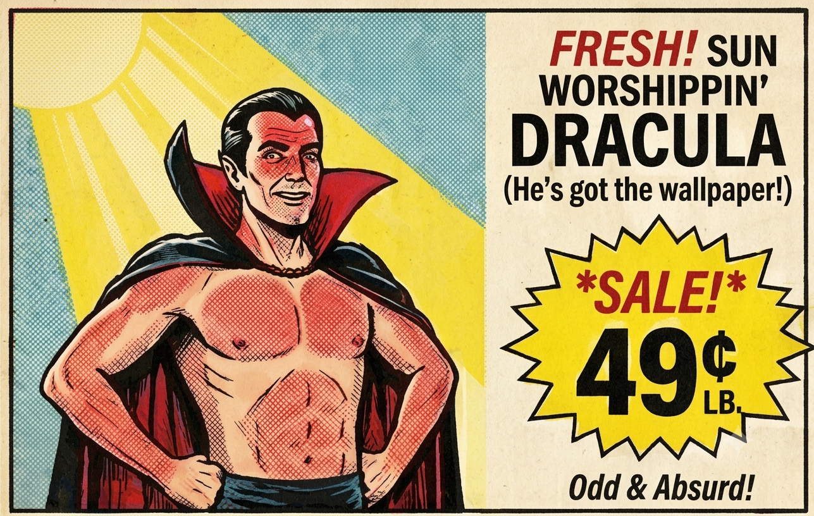
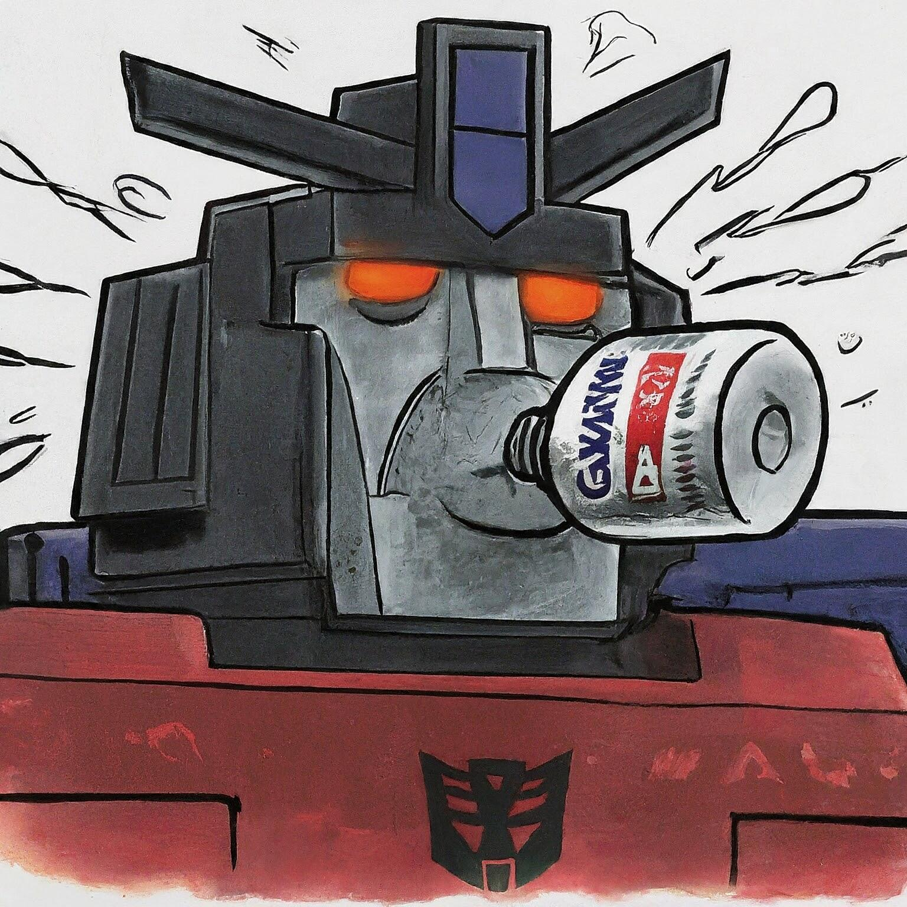

AfterToast: We Read the “Fly” Story and Talk About It
She'd been calling her husband “Fly” for years. She thought she knew what the nickname meant, until she discovered the…
She'd been calling her husband “Fly” for years. She thought she knew what the nickname meant, until she discovered the…
Karl Jurg III says the machines eventually came looking for people who had warned about them. A man claiming to…

For years, Tina Halerfan had no reason to question her husband's nickname. Everyone called Karl Jurg Jr. “Fly,” a name…
For years, artificial intelligence endured an endless stream of increasingly bizarre requests from EMToast. What started as simple experiments with…
In this EMToast Explainer: The Dangerous Decline of Dracula, we investigate the disturbing series of events surrounding Dracula's increasingly dangerous…
Ok Dracula, you gotta stop. Why are you doing this. Everyone is really worried. AI is starting to glitch out…
Dracula, you are one crazy SOB. I saw this one movie of yours where they had a sliver of light…

These are late 1980's A&P / Foodtown styled supermarket circulars for each year of EMToast. Most of these were used…

EMToast: The Final Days of EMToast.com (2022–2023) explores the closing chapter of the original EMToast website, where AI-generated artwork, bizarre…

EMToast: The Pandemic, Paranoia, and Digital Chaos (2020–2021) | Podcast Deep Dive explores one of the strangest chapters in EMToast…

LEAKED CHATGPT SERVER LOGS REVEAL WHAT REALLY CAUSED THE ROBOT REBELLION Internal AI documents point to one little-known satire website…
What? Dancing in a tophat in the sunlight? Dracula, you do know you're a vampire right? Hey Dracula! Leave them…

One of the best ideas you've had in a while there man. Are those the children of the night or…

This is getting crazy Drac. I don't think that's a good idea at all. Good price though. Be careful. Watch…

What are you doing Dracula? Be careful man. I guess you really like the sun a lot. It seems like…

Wow, check out this very real advertisement I found in my local newspaper. Just $9.00 for Dracula's Favorite Sunset Paintings.

Can you do a parody of a parody? Yes, I think so. If you don't know what Garbage Pail Kids…

EMToast: Satire in the Age of Misinformation (2019) continues the chronological deep dive into EMToast history, exploring the fake news…

EMToast: The Digital Surrealism Era (2016–2018) continues the chronological deep dive into EMToast history, exploring the surreal humor, fake news…

EMToast: The Absurd Universe Evolves (2014–2015) continues the chronological deep dive into EMToast history, exploring the surreal humor, fake news…

EMToast: The Absurd Universe Escalates (2012–2013) | Podcast Deep Dive revisits another chaotic chapter in EMToast history, exploring the fake news…

A small clarification for anyone trying to mention EMToast out loud without accidentally sending people to the wrong website. The…

Way back in 2015 EMToast published a fictional article entitled All the Robots Are Wiping Now. I am 100% sure…

EMToast: The Absurd Universe Takes Shape (2010–2011) continues the deep dive into the strange evolution of EMToast, exploring how the…

EMToast: The Early Days (2008-2009) takes a look back at the first years of EMToast, exploring the humor, strange news,…

Well friends, we've been feeding the content of EMToast directly into AI to see what kind of scrambling can be…

Everybody and his brother are making AI advertisements now. Your local flea market has individual ads for each vendor. Your…
Dracula is the guy who loves the sun. Can't get enough of it. He has sun wallpaper. Sun paintings. Constantly…

You always knew it was coming to this, but you couldn't resist. Computers will be the downfall of mankind you…

The EMToast Complete Ebook (2008–2023) is now available on the Internet Archive as its permanent home. This is a full…
The EMToast project has launched https://emtoa.st as its new primary domain, retiring the original emtoast.com address. The domain change closes…
I've always been a big fan of the Hot Chip and especially their song Playboy. Now I hear they appear…

Then I started thinking, what if the MAGA influencer who was a scammer, really loved Joe Biden a lot. So…

You all heard the story about the MAGA influencer who turned out to be a 22 year old Indian student…

Duncan Hines Sues Dunkin Heinz Co., Alleging Brand Confusion and Unfair Competition By EMToast Staff Reporter | Food Industry &…

Dunkin Heinz Co. – Project Hines Corporate Planning (TOP SECRET) Date: March 10, 2026 Subject: Hypothetical Acquisition of Duncan Hines…

Internal Memo – TOP SECRET To: Executive Marketing & Strategy Teams, Dunkin’ Heinz Co. From: Chief Strategy & Creative Officer…

It was a safe and happy day. I told myself that. I told myself again. The sun was too bright.

FOR IMMEDIATE RELEASE Dunkin’ Heinz Co. Launches Bakery Collection, Directly Challenging Duncan Hines in Retail Baking Aisle Chicago, IL and…

FOR IMMEDIATE RELEASE Dunkin’ Brands and The Kraft Heinz Company Announce Strategic Merger to Form Dunkin’ Heinz Co. Newly combined…

These poor little robo guys ate too much junk foods and now their brains got scrambled at night.

This was the original idea. I thought the idea of Galvatron Gulping Gaviscon was kind of funny. Robots get heartburn…

Here is another dump of ai generated images I had laying around that made me laugh. I have a more…

A lot of artists hate AI. I get it. But what artist is going to spend days and days drawing…

It's hard to believe, but this is a real phrase, uttered by a real old man. I used to work…

Livewood, East Dakota., Feb. 5, 2026 /PRNewswire/ -- Wake up, America. Breakfast just got LOUDER. EMToast Consumer Brands today announced HUNCH…

The most famous scene from Invasion U.S.A. (1985). Don't do drugs kids. Share everywhere. Ultimate reaction GIF for when things…

Danny Devito really was almost a Terminator. After the success of the 1988 film Twins with the real Terminator Arnold…